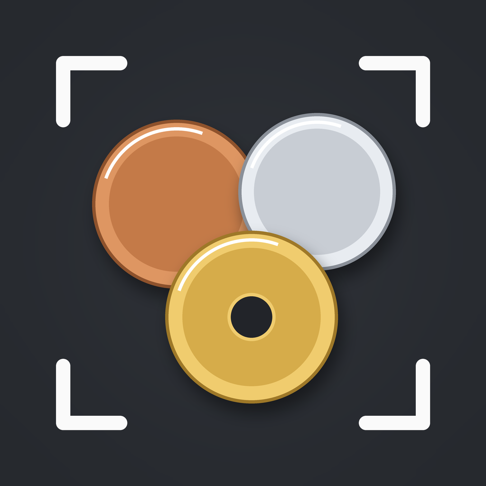

小銭を広げて、真上から1枚撮るだけ。1円・5円・10円・50円・100円・500円の枚数と合計を、その場で出します。
レジ締めの小銭、釣り銭の準備、集金、貯金箱。金種ごとに手で数えて電卓に打ち込む手間を減らすためのアプリです。
木目の台や白っぽい台では硬貨を見落とすことがあります。金額は画像からの推定です。最終確認はご自身で行ってください。
30枚までは無料で合計まで使えます。Pro（買い切り・サブスクリプションではありません）で、31枚以上の合計、撮り足しの累計、レジ締めの金種表と過不足、釣銭準備金の型、履歴と CSV 書き出しが使えます。
ご質問・ご要望・不具合報告は、お問い合わせフォームよりお寄せください。
Spread Japanese yen coins on a dark plain surface and take one photo from above: the app shows the count per denomination and the total, and lets you correct any coin with a tap. Available in Japan, in Japanese. Up to 30 coins per photo are free; a one-time purchase (not a subscription) unlocks larger counts and the cash-count sheet.
The app collects no personal data and works fully offline. See the Privacy Policy.